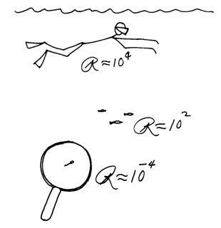
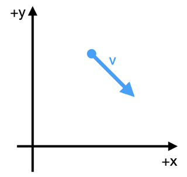
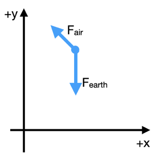
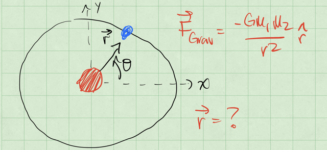
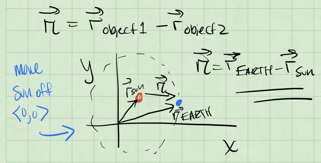
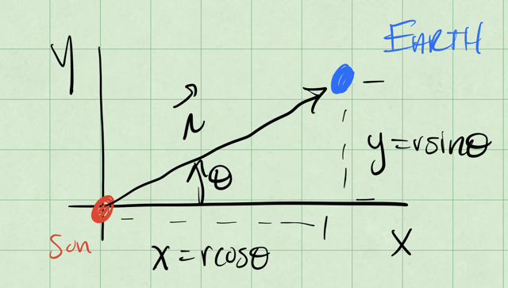

04 - Why does fluid drag complicate things?#

Handwritten Notes
Learning Goals#
After studying Lesson 04, you should be able to:
Differentiate between the two primary forms of fluid drag (\(F \sim v\) and \(F \sim v^2\)) and identify their applications in real-world scenarios.
Explain the concept of the Reynolds number and its significance in characterizing fluid flow regimes.
Describe the differences between low Reynolds number (laminar) and high Reynolds number (turbulent) flows, including their physical implications.
Analyze the equations of motion for systems with linear and quadratic drag forces in one and two dimensions.
Solve analytically the equations of motion for systems with linear drag and explain why quadratic drag systems often require numerical methods.
Develop and interpret free body diagrams for objects experiencing fluid drag in two dimensions.
Apply Newton’s Second Law to derive coupled differential equations for systems with drag forces and explain the challenges in solving them.
Discuss the significance of the simple harmonic oscillator and gravitational bound systems as base models for more complex physical systems.
As an object moves through the fluid, the molecules of the fluid collide with the object and exert a force on it. This collision changes the momentum of the object just a little bit. The collision does so in a random way, but the average effect of all those collisions is to exert a force on the object that is proportional to a function of the object’s velocity, \(F(v)\). In some cases those collisions occur such that they make an impact; other times they might approach the object more slowly and slide over it in familiar frictional interaction. These two behaviors are both fluid drag, but they are different forms.
The first form (\(F \sim v^2\)) describes the behavior of things like a skydiver falling, a high-speed car, or a baseball thrown through the air. But it can also be valid for the movement of fish in water, or a submarine moving through the ocean. Through those collisions, the distribution of those forces can cause intra-body forces, which can result in damage or deformation of the object. However, we often model the body as solid and focus on the way this form of air resistance changes the motion.
This form of air resistance cannot describe the behavior of objects approaching the speed of sound in the fluid. Objects moving a speeds that high can produce shock fronts that forces the fluid to go through abrupt changes in density, pressure, and temperature. Below is a figure of a shock front produced the nose of a jet flying at supersonic speeds.

Fig. 10 A shock front from a supersonic jet. Source: Wikipedia#
{kind=link}
The second form (\(F \sim v\)) describes the flow of a viscous fluid around a solid object. You might think of this as pulling an object through some viscous oil, honey, or even molasses. The movement of the fluid around the object exerts a force and slows the motion of the object. In water, this form can explain the motion of some of the smallest creatures on Earth, like the water bear, an amoeba, or a paramecium.
What is interesting here is that these creatures have had to adapt to this form of fluid drag. Edward Purcell wrote a paper in 1977 called Life at Low Reynolds Number[1] that describes the motion of these creatures. He demonstrates that the physics in this regime requires creature to have adapted forms of locomotion that can take advantage of that environment. The figure below is reproduced from Purcell showing the decreasing physical scale and, thus, lower Reynold’s numbers.
{kind=link}

Fig. 11 An illustration of the Reynold’s number for different bodies in water. Source: Purcell’s, Life at Low Reynolds Number, Figure 3#
Why do we often neglect air resistance?#
We’re in the business of making models of physical systems using the concepts and tools of Classical Mechanics. We’ve focused on Newton’s Laws, which are a formulation of mechanics that starts from the concept of the force.
We often start with that approach because the mathematical tools that we have available to us when we are first learning physics are geometry and algebra. Forces are a vector concept and Newton’s Second Law is a vector equation that holds in each of the three dimensions of space. This formulation lends itself to a decomposing problems often into two or three separate problems, one for each dimension, and then using some algebra to solve the problems. However, that mathematics limits the kinds of explorations we can do.
This is one reason why we neglect air resistance in our first explorations of motion. Our models of air resistance are more complicated and require more advanced mathematics to solve. The equations of motion can be coupled and non-linear. In some cases, we cannot solve the equations of motion analytically and must resort to numerical methods like Euler’s method, or the more often used Runge-Kutta method.
The Reynolds Number#
The different forms of fluid drag are often described by a dimensionless number called the Reynolds Number. The Reynolds number is a ratio of the inertial forces to the viscous forces in a fluid.
What are inertial forces? They are the ones associated with resistance to motion, the mass of the object. The more massive the object in a given setup, the higher the inertial contribution.
What are viscous forces? They are the ones associated with the interaction of the fluid with the object. The more viscous the fluid - the harder it for is to flow under the same conditions, the higher the viscous contribution.
The Reynolds number is defined as:
where \(\rho\) is the density of the fluid, \(v\) is the velocity of the object in that fluid, \(L\) is a characteristic length of the object, and \(\mu\) is the dynamic viscosity of the fluid.
You can probably see who the Reynolds number characterizes the system of the object and the fluid as their are properties of both the object and the fluid in the equation. The Reynolds number can be measured quite accurately in a lab because the laboratory setups are typically designed to make the measurement of the Reynolds number easier. We will often estimate it in theoretical physics.
What is a characteristic length?#
This length is a generic length scale associated with the flow, this can be the order of magnitude size of the object, or, in the absence of an object, the same for the pipe or channel in which the flow is occurring. If it’s an airplane, it can be the wingspan, or the length of the fuselage. If it’s a car, it can be the length of the car. If it’s a sphere, it can be the radius, and so on.
What is dynamic viscosity?#
Viscosity is the measure of the fluid’s resistance to flow. It’s how the fluid slides past itself. It’s a bit of a harder quantity to describe, but you can think of it as the “stickiness” of the fluid. The higher the viscosity, the more sticky the fluid is – really, for a given setup, the more viscous fluid will flow more slowly. The lower the viscosity, the higher tendency for a fluid to flow. Compare honey to water in the same vessel and temperature, and you’ll observe the difference in viscosity.
Measuring viscosity#
We can sometimes measure viscosity with a viscometer, which uses a capillary tube to measure the time it takes for a fluid to flow through a tube of known dimensions. However, this works best for Newtonian fluids, which are fluids that have a constant viscosity.
Non-Newtonian fluids (in your kitchen; 1 minute video)
Not all fluids are Newtonian, and some fluids have a viscosity that changes with the rate of flow. These non-Newtonian fluids can be shear thinning or shear thickening. Shear thinning fluids become less viscous when they are stirred or shaken, while shear thickening fluids become more viscous when they are stirred or shaken.
Below is a video from America’s Test Kitchen that demonstrates the behavior of a non-Newtonian fluid. The fluid is made from cornstarch and water, and it’s called oobleck.
The physics of cooking is fascinating and covers the field of soft matter physics. There’s a free course on the subject offered by Harvard and EdX.
Low Reynolds Number Flows#
A low Reynolds number flow is a flow where the viscous forces dominate the inertial forces. The object is moving slowly, or the fluid is very viscous, or the object is very small. We typically think of these flows as being in the range of \(Re < 1\). In these flows, the motion of the fluid is typically laminar; it flows in fairly smooth and parallel layers. Low Reynolds number flows can produce dynamics that is counterintutive. Below are a couple videos that explain the physics of low Reynolds number flows.
Physics of Life - Life at Low Reynolds Number (15 minute video)
This video focuses on the biological aspects of the problem as the physics of low Reynolds numbers is important for understanding the motion of microorganisms.
Some YouTube videos are unable to be embedded in Jupyter Books. Click the image below to watch the video on YouTube.

G.I. Taylor’s Low Reynolds Number Flows (32 minute video)
This video is a classic from G.I. Taylor who was a physicist interested in sharing the conceptual beauty of physics with the general public. He was also a pioneer in the field of fluid mechanics. In fact, Taylor’s groundbreaking paper[1] on the stability of fluid flows between two rotating cylinders set off studies into turbulence. The Taylor-Couette flow is a critical tool for studies of turbulence.
High Reynolds Number Flows#
In high Reynolds number flows, the inertial forces dominate the viscous forces. The object is moving quickly, or the fluid is not very viscous, or the object is very large. We typically think of these flows as being in the range of \(Re > 1000\). In these flows, the motion of the fluid is typically turbulent. Turbulent flows are characterized by chaotic and irregular motion. The fluid moves in a complex and unpredictable way, with eddies and vortices forming and dissipating. Turbulent flows can be very difficult to predict and model, but they are also very common in nature.
Von Kármán’s Vortex Street (2 minute video)
The von Kármán vortex street is a pattern of alternating vortices that can form when a fluid flows past a “bluff” body, such as a cylinder or a sphere. The vortices are shed from the body in a regular pattern, creating a repeating pattern of alternating vortices. The von Kármán vortex street is an example of a high Reynolds number flow, and it can be used to study the behavior of turbulent flows. Below is a video of a von Kármán vortex street simulation.
Turbulent Flow (24 minute video)
Turbulence is a major research area in science. We don’t fully understand it. We are trying to determine what triggers it, how to control it, and how to predict if and when it will occur. The problem of turbulence is frequently multi-scale such that behavior at one time or length scale is not well explained or connected to another scale. Additionally, the mathematics of turbulence is very difficult. It makes for an interesting and challenging research area. Below is a video that explains the some of the physics of turbulence. The first 4 minutes or so are at least worth watching.
Developing Equations of Motion#
As you might have noticed in the last few weeks, our principal work is using models to develop equations of motion. Those equations of motion can then be analyzed, integrated, and plotted to understand the behavior of the system. This week, we will focus on the equations of motion for a few different systems.
We will set up the equations of motion for a 2D quadratic drag system and show it’s intractable analytically. Here is where our use of Euler-Cromer integration can get us out of trouble. We will also develop the analytical solution to the 2D drag case when the drag is linear, which will show us how to solve these problems and compare them things we know.We will then quickly introduce two additional systems that are very common “base models” for more complex systems: (1) the gravitational bound planet system (a proxy for other central force systems) and (2) the simple harmonic oscillator (a common proxy for many oscillatory systems).
Two-Dimensional Quadratic Drag#
The drag force in 2D can be written in terms of the velocity vector of the object as:
where \(D\) is the drag coefficient and \(\vec{v}\) is the velocity vector. Note that this force is written entirely using velocity, there is no dependence on position. However, the velocity vector is also function of time, \(\vec{v} = \vec{v}(t)\).
Define the Coordinate System#
To start this analysis, we need to define a coordinate system. Below, we draw the particle at some random time with the vecolicty vector shown. The axes are typical: \(x\) is horizontal and \(y\) is vertical. The drag force is always opposite to the velocity vector, so it will always be in the opposite direction of the velocity vector.
{kind=link}

Fig. 12 Coordinate system choice for the 2D falling ball.#
Caution
Redraw vector figure and post SVG
In this coordinate system, the properties of the particle are:
where \(\hat{x}\) and \(\hat{y}\) are the unit vectors in the \(x\) and \(y\) directions, respectively. And the magnitude of the velocity vector is \(|\vec{v}| = \sqrt{v_x^2 + v_y^2}\) as you might imagine.
The free body diagram at the point in time shown above is shown below. You see the gravitational force pointing directly downward and the drag force pointing in the opposite direction of the velocity vector. We continue to apply our coordinate system to the forces.
{kind=link}

Fig. 13 Free Body Diagram for the 2D falling ball.#
Caution
Redraw vector figure and post SVG
Apply Newton’s Second Law#
We now apply Newton’s Second Law to the particle in the chosen coordinate system. The forces acting on the particle are the gravitational force and the drag force.
How do we apply the coordinate system to the forces? We focus on the diagram above. We start by writing the sum of the forces. For this, we take \(F_{gravity,x}\) to be a positive value, \(mg\), where \(g\) is the magnitude of the acceleration due to gravity.
We can now write the forces in terms of the components of the vectors, and we introduce the acceleration vector, \(\vec{a} = \langle a_x, a_y \rangle\).
Let’s clean this up a little in terms of the components:
We can try to focus on the velocity instead to simplify the equations. Then we integrate those equations to get the position.
Rats! There is no analytical solution to these equations.
These are called coupled differential equations because the equations are linked by the terms \(\dot{x}\) and \(\dot{y}\). This means that we cannot solve them independently. We need another approach to solve these equations.
Why can’t we solve these equations?#
We cannot form a solution because they are coupled and non-linear. Sometimes, we can decouple these equations (as we will see later) and produce partial differentials of the form:
These lead to independent equations of motion. We can use separation of variables to try to solve them. This is not possible in all cases, so functions are still not integrable analytically. But we cannot even form these partials, so an analytical solution is not possible in this case.
Linear Drag in Two-Dimensions#
As we saw above, the quadratic drag case is intractable. However, the linear drag case is analytically solvable. The drag force in 2D can be written in terms of the velocity vector of the object as:
where \(\gamma\) is a proxy for the drag coefficient. The linear drag force is proportional to the velocity vector.
We have the same set up as before and same FBD.
Fig. 14 Coordinate System for the 2D falling ball.#
Caution
Redraw vector figure and post SVG
And thus the same coordinate system. The properties of the particle are the same as above.
Apply Newton’s Second Law#
We now apply Newton’s Seccond Law to the particle in the chosen coordinate system. The forces acting on the particle are the gravitational force and the drag force.
Again, the gravitation force magnitude is \(mg\), so we write the forces in terms of the components of the vectors:
In terms of the acceleration vector, \(\vec{a} = \langle a_x, a_y \rangle\), we have:
Notice that \(v_x\) and \(v_y\) are the components of the velocity vector; they can be positive, negative, or zero. We can clean this up in terms of the velocity components, and we have two linear, uncoupled differential equations:
Solve the Equations#
We can try to solve these equations by integrating them. We can integrate the first equation to get the velocity in the \(x\) direction as a function of time.
Velocity in the \(x\) direction#
We separate the variables and integrate:
We integrate from \(v_{0,x}\) to \(v_x\) and from \(0\) to \(t\):
We see an exponential decay in the velocity in the \(x\) direction.
Velocity in the \(y\) direction#
Now we can try to do the same for \(v_y\):
We separate the variables and integrate:
Note that this integral will be of the form:
Again, we integrate from \(v_{0,y}\) to \(v_y\) and from \(0\) to \(t\):
Next we use exponentiation and do a little algebra to solve for \(v_y\):
In the \(y\) direction, the story appears more complex.
Trajectories#
One of the main concepts we will discuss the trajectory of a system. We borrow that language and idea from projectile motion – the location of the particle as a function of time is the trajectory. In this class, we will consider the word trajectory to mean the evolution of any property of the system as a function of time. This connects strongly to the concept of phase space, which we will discuss in the future.
In the prior example, we found the trajectory of the velocity in the \(x\) and \(y\) directions.
We can expound on that work to find the trajectory of the position of the particle as a function of time. We can integrate the velocity to get the position.
Those integrals are doable, but they can be a little messy. We won’t do them here, but quote the results consistent with the above equations.
2D Gravitational Bound System#
Consider a massive object (a large star) and a smaller satellite (a moon or small planet). We know that Newton’s Universal Law of Gravitation tells us the force between two objects that interact gravitationally is:
where \(G\) is the gravitational constant, \(m_1\) and \(m_2\) are the masses of the objects, and \(r\) is the distance between the objects.
But we need to be more clear about the forces and the vector relationships. Consider the figure below with the massive object at the origin and the satellite at some distance \(r\) from the origin. What is the vector \(\vec{r}\) that describes the location of the satellite?
{kind=link}

Fig. 15 Gravitationally bound system with one body at the origin.#
Error
Draw vector figure and post SVG
If we move the sun from the origin a little, we can start to see what \(\vec{r}\) is. The vector \(\vec{r}\) is the vector from the sun to the satellite. See the figure below to see the sketch.
{kind=link}

Fig. 16 Gravitationally bound system with neither body at the origin.#
Error
Draw vector figure and post SVG
So if the location of the sun is \(\vec{r}_{sun}\) and the Earth is \(\vec{r}_{earth}\), then the vector \(\vec{r}\) is:
Let’s return to the simplified model with the sun at the origin, and consider the earth at some distance \(r\) from the origin. The force on the earth is:
where \(M_{sun} = 2\times10^{30} \mathrm{kg}\) is the mass of the sun and \(M_{earth} = 6 \times 10^{24} \mathrm{kg}\) is the mass of the earth.
Define the Coordinate System#
In the figure below, we show the earth at some distance \(r\) from the origin at an angle \(\phi\) from the \(x\)-axis. This distance is about \(1.5 \times 10^{11}\;\mathrm{m}\) or \(1\;\mathrm{A.U.}\) (astronomical unit). While not entirely obvious, the scale of these numbers allow us to assume the Sun is at the origin, and doesn’t move. Although this is not a good assumption for the real solar system, the sun orbits the barycenter of the solar system, which is about 1 solar radii from the center of the sun.
{kind=link}

Fig. 17 Vector analysis for a gravitationally bound system with neither body at the origin.#
Error
Draw vector figure and post SVG
Let’s use the standard \(x\) and \(y\) axes to write the equations of motion. We can apply Newton’s Second Law to the earth in the chosen coordinate system.
So that the forces in the \(x\) and \(y\) directions are:
and thus the acceleration of the Earth in the \(x\) and \(y\) directions are:
This gives us a set of coupled differential equations.
How do we then get the trajectories?#
We can’t solve these equations without more information. We need to know the initial conditions of the system (the initial position and velocity of the Earth). We can then integrate these equations to get the position of the Earth as a function of time.
We have three potential ways to solve these EOMs:
Direct Integration: We can integrate the equations of motion directly. This is possible in some cases where the equations are simple enough; think about the falling ball without air resistance, or the linear 1D drag case.
Decouple and Solve: We try to solve the coupled differential equations by decoupling them. This is possible in some cases, but not all. We can frequently decouple the equations by writing them in terms of the velocity, or by making a change of position variables.
Numerical Integration: We use numerical methods to predict the motion in small time steps. This is the most common method for solving complex systems.
The Simple Harmonic Oscillator (SHO)#
In 1D, the simple harmonic oscillator is a system where the force is proportional to the displacement from the equilibrium position. The force is given by:
where \(k\) is the spring constant and \(s\) is the displacement from the equilibrium position, \(x-L_0\). The quantity \(L_0\) is the relaxed length of the spring. The figure below shows the typical horizontal spring system.

Fig. 18 Free Body Diagram of a Simple Harmonic Oscillator; the arrows label the direction of forces acting on the mass. SVG File#
{kind=link}
We can typically choose to measure the displacement from the equilibrium position, and write the force instead as:
So the equation of motion that we will try to solve is:
How do we solve this?#
where \(\omega = \sqrt{\dfrac{k}{m}}\) is the natural oscillation frequency of the system.
It might seem strange, but let’s try the following potential solution to the differential equation:
where \(C\) is a constant. We can take the second derivative of \(x(t)\) with respect to time to see if it satisfies the differential equation.
This is a solution to the differential equation as long as \(C\) is a constant, but it’s a complex one (\(C=a+ib\)). We can also write the solution in terms of the cosine and sine functions because the exponential function can be written in terms of these functions.
Thus, another general solution to this EOM that we can write is:
where \(A\) and \(B\) are constants that depend on the initial conditions of the system. Let’s see how that works:
Another form that works is:
where \(D\) is the amplitude of the oscillation and \(\phi\) is the phase of the oscillation. Let’s check that again:
So we have several forms of the general solution to the simple harmonic oscillator. We can use these solutions to understand the behavior of the system. We can also use these solutions to understand the behavior of more complex systems that can be approximated by the simple harmonic oscillator.
One critical aspect of these solutions is that they have 2 free parameters, \(A\) and \(B\), or \(D\) and \(\phi\). These parameters are determined by the initial conditions of the system. There are N free parameters in the general solution to an Nth order differential equation.